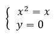

модуль комплексного числа. сопряженные комплексные числа
примеры решения задач
Пример 1.
Зная, что корнем уравнения x3 - 7x2 + 17x - 15 = 0 является число z1 = 2 + i, найти все корни даного уравнения.
Решение. Поскольку все коэффициенты данного уравнения - действительные числа, то число z2 = 2 - i также является корнем уравнения. Пусть z3 - неизвестный корень уравнения, тогда
x3 - 7x2 + 17x - 15 = (x - z1)(x z2)(x - z3);
x3 - 7x2 + 17x - 15 = (x2 - 4x + 5)(x - z3).
Разделим обе части последнего равенства на x2 - 4x + 5, получим x - z3 = x - 3.
Следовательно, z3 = 3.
Ответ: 2 + i; 2 - i; 3.
Пример 2.
Найдите все комплексные числа, каждое из которых сопряжено сосвоим квадратом.
Решение. Пусть z = x + yi - искомое комплексное число, где x и y - действительные числа. Тогда число z, сопряженное числу z, равно x - yi. По условию задачи имеем: z = z.
(x + yi)2 = x - yi. (1)
Преобразовав это уравнение, получим:
(x2 - y2) + 2xyi = x - yi.
Два комплексных числа равны тогда и только тогда, когда равны их действительные и мнимые части. Следовательно, последнее уравнение равносильно следующей системе уравнений с действительными переменными x и y:
Возможны два случая.
1) y ≠ 0. Тогда полученная выше система равносильна системе:
которая имеет следующие решения:
2) у = 0. Тогда полученная выше система равносильна системе:

которая имеет два решения: (0; 0) и (1; 0). Итак, искомых чисел четыре:
из них два числа z3 и z4 - действительные, а два других − z1 и z2 - комплексно сопряженные.
Ответ: .
проверь себя
Задание 1.
Вычислите модуль комплексного числа
1) √2
2) 2 √2
3) 4
4) 2
5) 0
Ответ:
Задание 2.
Вычислите модуль комплексного числа
1) 4
2) 2 + √2
3) √2 - 2
4) -6
5) 2
Ответ:
Задание 3.
Вычислите модуль комплексного числа z = -3i
1) 3
2) 9
3) -3
4) √3
5) 1
Ответ:
Задание 4.
Вычислите модуль комплексного числа
1) 1
2) 2
3) -√3 + 1
4) √3 - 1
5) √3
Ответ:
Задание 5.
Вычислите модуль комплексного числа z = 1 - i
1) 2
2) 0
3) √3
4) √2
5) 1
Ответ:
Задание 6.
Вычислите аргумент комплексного числа z = 5i
1) 30°
2) -60°
3) 90°
4) 180°
5) 270°
Ответ:
Задание 7.
Вычислите аргумент комплексного числа z = 1 - i
1) 45°
2) 135°
3) 180°
4) -30°
5) 315°
Ответ:
Задание 8.
Вычислите аргумент комплексного числа
1) 120°
2) 150°
3) -30°
4) 60°
5) -60°
Ответ:
Задание 9.
Вычислите аргумент комплексного числа z = -2i
1) 0°
2) 90°
3) -60°
4) 270°
5) 45°
Ответ:
Задание 10.
Вычислите аргумент комплексного числа z = -1 + i
1) 30°
2) 180°
3) -45°
4) 225°
5) 135°
Ответ:
реши сам
Задание 1.
Известно, что z1 = 1 + 2i, z2 = -3i. Найдите:
1)
2)
Задание 2.
При каких действительных значениях x и y комплексные числа и будут сопряженными?
Задание 3.
Вычислите модуль комплексного числа z = 5 - 2i
Задание 4.
Найдите все комплексные числа, каждое из которых сопряжено с самим собой.
Задание 5.
Найдите все комплексные числа, сопряженные своему кубу.
Задание 6.
Вычислите аргумент комплексного числа z = 4 + i
Задание 7.
Вычислите аргумент комплексного числа z = -3 - 2i